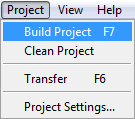
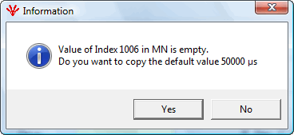
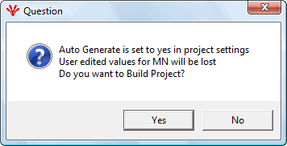
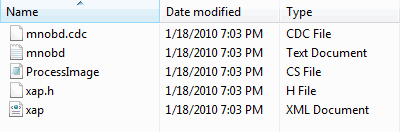

The user can build the project either from the top menu bar as shown in Figure or clicking icon in the icon bar.

A window will appear if the 1006 object does not have any value set by the user. Selecting Yes will set the value for 1006 as 50000 microseconds which is its default value. The user can change the value if he needs.

If the user has set auto generate to 'Yes', a pop-up appears with a message that changes made by the user in PDOs will be lost as auto generate option is enabled. So, it asks whether the user wants to build the project or not. Click 'Yes'

Following files will be created after the build of project. These files will be present in <Project location >/<Project Name>/cdc_xap folder
mnobd.txt - Text version of the binary cdc file.
mnobd.cdc - CDC binary file used with the stack
XAP.h - Header file for the application
XAP.xml - XML file with variable names, Datatype, datasize, ByteOffsets, BitOffsets
ProcessImage.cs - C# version of the process image variables

After the build, the mnobd.cdc and the xap.h files generated by the tool shall be copied to the openPOWERLINK location. Find the Transfer.sh or Transfer.bat inside the scripts folder in the created project for editing the scripts.
The files can be copied into the following locations:
For Windows
openPOWERLINK_CFM_V1.x.x-x/Examples/X86/Windows/VC8/demo_pcap/xap.h
openPOWERLINK_CFM_V1.x.x-x/mnobd.cdc [If the project is run using Visual studio]
openPOWERLINK_CFM_V1.x.x-x/Release/mnobd.cdc [If the project is run directly by execution the .exe]
For Linux
openPOWERLINK_CFM_V1.x.x-x/Examples/X86/Linux/gnu/demo_mn_8139_kernel/xap.h
openPOWERLINK_CFM_V1.x.x-x/mnobd.cdc
Note: The above are mere examples and do not depict the actual location.
Compiling and running the openPOWERLINK stack
After transferring the mnobd.cdc and the xap.h file to the respective location, the user shall follow the below steps to compile and run the stack:
Windows:
Open the OpenPowerlink.sln [inside the <>/openPOWERLINK_CFM_V1.x.x-x/ directory] using Visual studio.
Compile the project
Run the project
Linux:
cd /<>/openPOWERLINK_CFM_V1.x.xx/Examples/x86/Linux/gnu/demo_mn_8139_kernel/
make [should not produce any error]
sudo insmod epl.ko
Note: Make sure that you connect the powerlink network in Realtek 8139 card